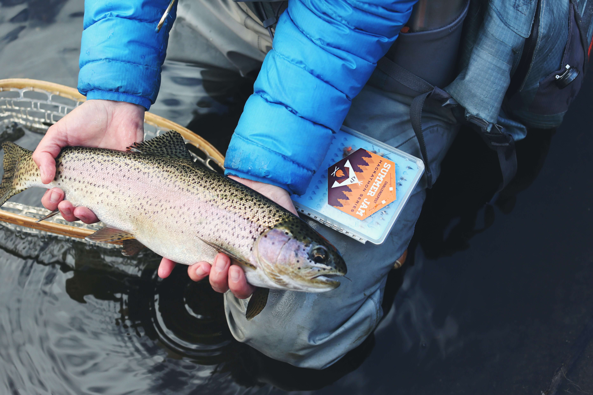
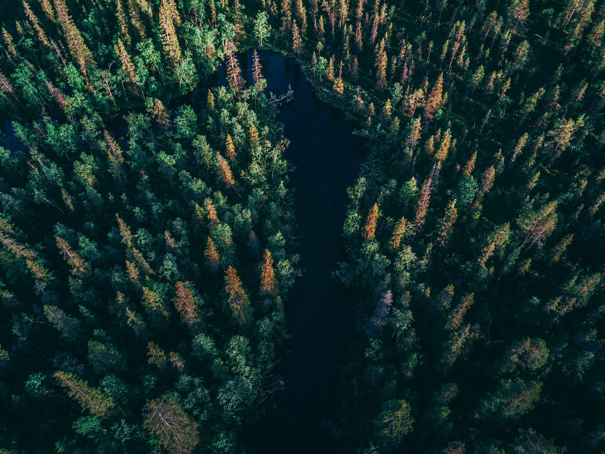

Fiske och Stugor i Norrbotten
Du kan knappast hitta ett bättre och mysigare boende om du planerar att semestra i Norrbotten. Är det en fiskesemester du vill ha så har du funnit det rätta stället! Tre mysiga fyra-bäddsstugor, fullt utrustade med kök, toalett och dusch. I anslutning till stugorna finns även en mycket fin vedeldad bastu samt den mysiga grillkåtan-TOP ARCTIC.
Ni hittar oss i Överkalix vid E10.
18 km norr om Överkalix centralort invid väg E10 ligger byn Tvärån. Innan ni kommer till Tvärån passerar ni byn Gyljen. Tvärån ligger ca 8 km ytterligare norrut. Stugorna ligger på höger hand om ni kommer från söder.
Boka stuga i tid, då efterfrågan under fiskesäsong är hög. Kontakta oss nedan för bokning eller andra frågor.
Eller ring Juha +46705610681